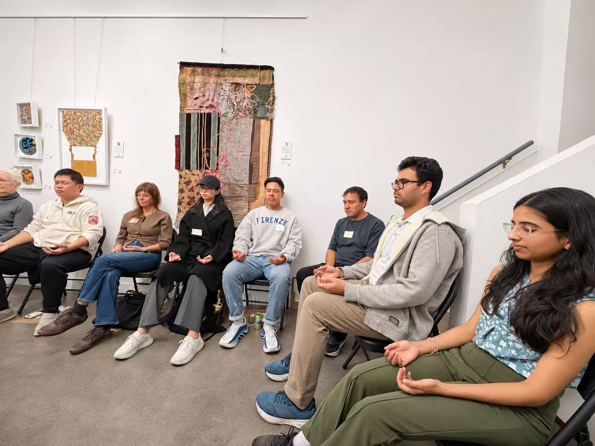
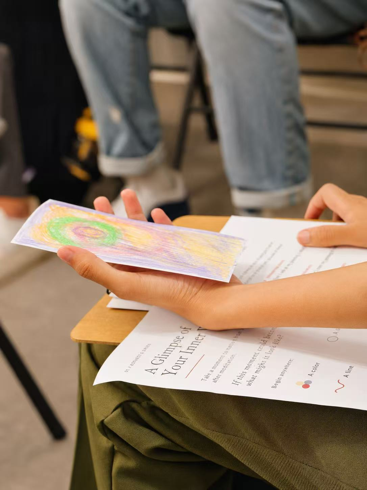

The Art of Slowing Down
Where meditation, human connection, and AI creativity meet
In a world where AI can generate an image in seconds, why would we spend an evening sitting quietly, listening to a clock, and drawing with crayons?
Perhaps because creativity is not only about what we produce, but also about what we notice.
For our seventh AIC gathering, we explored a different starting point for creativity: stillness.
Guided by our guest facilitators, Meganaa Reddy and Aditya Dubey, we began by choosing a color to represent how we felt. Some chose red for excitement, others purple, while I chose green.
We were sitting in the same room, yet each of us arrived with a different inner world.
Then we closed our eyes.
Through breathing exercises and meditation, we gradually turned our attention away from our usual distractions. I began noticing sounds I would normally ignore: the rhythmic ticking of a clock, faint noises from outside, and the quiet presence of people around me.
The world had not become quieter. I had simply begun to listen.
Something else emerged from this shared silence. One participant described sensing a collective energy in the room. Although meditation was deeply personal, experiencing it together created another form of connection.
We did not need to experience the same thing to feel connected.

After meditation, we picked up crayons and tried to translate our experiences into images.
I drew green trees, a quiet moon, and flowing shapes inspired by the sounds I had heard. Others turned their feelings into colors, lines, and abstract forms.
None of us had been asked to create something beautiful. We were simply trying to express something that was difficult to put into words.

Then came AI.
We photographed our drawings and invited AI to reinterpret them. Simple sketches became more elaborate visual worlds, sometimes familiar, sometimes surprising.
But this raised a question: When AI can make almost anything look beautiful, what makes an image meaningful?
Perhaps the answer lies not in the sophistication of the final image, but in the experience behind it.
The ticking clock meant something to me because I had heard it. The green trees came from my own sense of calm. AI could transform those impressions into a new visual language, but it could not have lived that moment for me.
One reflection from the evening was the importance of letting go.
We often approach creativity by trying to control the outcome. We search for the right idea, the perfect expression, the most impressive result.
Yet this evening invited us to explore a different relationship with creation.
Meditation asked us to notice without immediately reacting. Drawing allowed us to express without worrying about perfection. AI introduced possibilities beyond what we had initially imagined.
Perhaps letting go does not mean giving up our creative agency. It means becoming open to what we might discover along the way.
At AIC, we often explore how technology expands human creativity. This gathering reminded us that before we ask what technology can create, there is another question worth asking:
What do we notice, feel, and imagine that makes something worth creating in the first place?
Sometimes, finding the answer begins with slowing down.
Special thanks to our guest facilitators, Meganaa Reddy and Aditya Dubey, Peter J. Koltai, Gallery House, and everyone who shared their inner worlds with us.